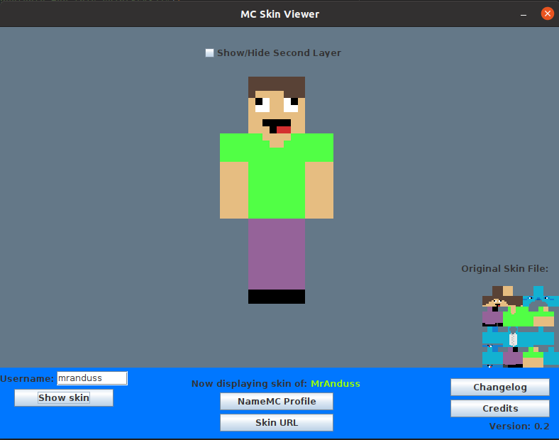

AndusDEV
SkinViewer
Application for seeing Minecraft Premium Skins.
Features:
- View Skins (with or without second layer)
- Download Skins
- View NameMC Profile
- Discord RPC
- Themes (Planned)
- Support for TLauncher Skins (Planned, If possible)
Screenshots:
